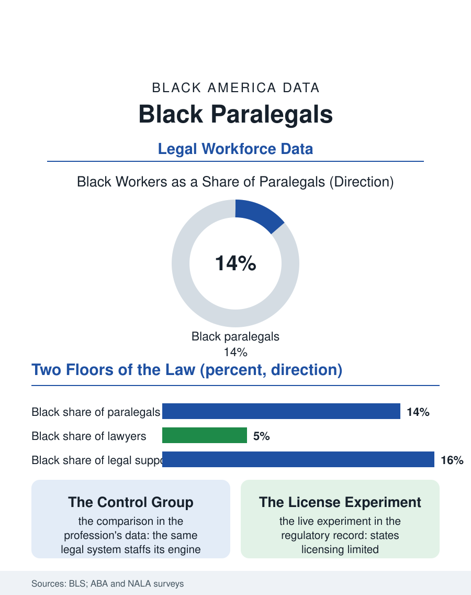

Black Employment
The Engine Room: Black Paralegals
Paralegals are the legal system's representative workforce behind a profession that is not, and the licensing experiments may convert them into independent practitioners. The paralegal file.

Paralegals are the legal profession's working engine, roughly three hundred fifty thousand strong, drafting, researching, managing discovery, and carrying client files under attorney supervision, and Black workers hold a substantial share of the occupation, on the order of thirteen to fifteen percent in the federal counts, one of the legal system's most representative workforces. The contrast with the attorney file's five percent is the article's subject. This article reads the paralegal file.
The Accessible Law Job
The occupation's door is genuinely wider than the profession's front entrance. Paralegal credentials run from certificates and associate degrees through bachelor's programs, with no single licensing gate in most states, and hiring runs on demonstrated skill, writing, organization, technology, and the interview more than pedigree, which produces a workforce that looks considerably more like the country than the bar does. Black paralegals are concentrated in the expected geographies and practice settings: the government legal offices, legal aid organizations, corporate compliance departments, and the litigation support industry of the big metros, with the federal system, the Justice Department and the agencies, employing a large and comparatively diverse paralegal corps under civil service rules. The work's substance has climbed steadily: e-discovery platforms, case management systems, and regulatory filing regimes made the senior paralegal a technical specialist whose billable rate and salary reflect genuine scarcity, and the Bureau of Labor Statistics counts the occupation's pay solidly in the professional middle. The gender composition, heavily female, intersects the race data as elsewhere in this atlas: Black women are the occupation's backbone in the urban markets, a fact the professional associations' demographics confirm.
The Ceiling Inside the Door
The file's tension is the ceiling, and it is architectural: the paralegal may do everything in a case except the reserved acts, appearing in court, giving legal advice, setting fees, that define the attorney's monopoly, so the occupation's mastery accumulates toward a wall that only the bar exam, behind the law degree, behind the debt file, can pass. The profession debates the wall's future in the regulatory experiments now underway in several states, licensing limited legal practitioners to perform defined services independently, and the paralegal workforce, senior, experienced, and diverse, is the obvious candidate pool for any such license, which makes the regulatory file a workforce equity file in disguise: expanding the license would convert the legal system's most representative workforce into independent practitioners serving the access-to-justice gap, the unmet civil legal needs of low-income households that the legal aid data quantify at staggering levels. The counterarguments, consumer protection and quality control, are the standard guild arguments this atlas has met at every credential's gate, and the state's early programs will generate the data to judge them. Inside firms, meanwhile, the paralegal career ladder has professionalized: paralegal managers, discovery counsel support roles, and compliance specializations have built senior tiers that retain expertise the old burn-and-churn model wasted, though the partnership economics of the firm still reserve the ownership tier for the credential on the other side of the wall.
The Bridge and the Mirror
Paralegal work functions, for a meaningful share of its Black workforce, as the legal profession's observation deck: the place from which the law's actual operation is learned, and from which some workers proceed to law school with open eyes while others build the senior paralegal career as the destination itself. The law school pipeline data catch the flow, and the paralegal-to-attorney path produces practitioners whose practice areas, housing, benefits, family, public defense support, reflect the dockets they came from. As a mirror, the occupation indicts the profession gently and completely: the same legal system that cannot diversify its bar manages, one floor down, to staff its engine rooms with a workforce that looks like America, at wages that support families, through doors that did not require a six-figure credential. The difference between the floors is not talent, effort, or interest, all of which the paralegal file documents in abundance. It is the price and design of the gate. The paralegal file closes at the discovery workstation at midnight before trial, where the case is, in operational fact, being carried by the workforce this article counted, toward a courtroom where a member of the other workforce will stand and speak. The system runs on both. Its honors, its ownership, and its fees flow to one. The regulatory experiments now running will show whether that distribution was a necessity of quality or a habit of guild, and the paralegal corps, patient and documented, is the control group the experiment has always needed.
More in Black Employment
The Black Unemployment Rate: The Two-to-One Pattern
Black unemployment runs at roughly twice the White rate — 5.5 percent against 3.3 percent in annual averages — a ratio stable across five decades of federal data. How it is measured and why it persists.
Black Median Weekly Earnings: The 80-Cent Ratio
Black full-time workers earn a median of about $900 a week — roughly 80 cents for every dollar White workers earn. The BLS earnings data by group, gender, and occupation.
Black Labor Force Participation: Working at National Rates
Black labor force participation runs at roughly the national rate — and Black women participate at higher rates than White women. The BLS participation data.
Source: U.S. Bureau of Labor Statistics, Current Population Survey; National Association of Legal Assistants surveys; state limited-license legal practitioner program data.